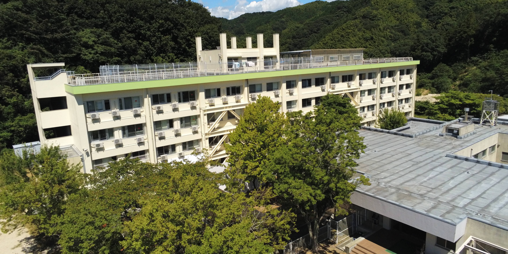

下は本科１年生から上は専攻科生までと、多くの仲間が同じ寮で生活を送ります。自分が１年生に入れば４学年の先輩がいますし、
自分が５年生になれば４学年の後輩がいることになり、先輩,後輩との関係を築くことができます。
また、このような環境の中で生活をすることによって、「全寮生との協調性」、「寮生活および学校生活に対する責任感」、
「寮内、学内、社会の規則を守る気持ち」、そして「他人への思いやり」などが身に付き、
それらは実社会に出たときに大いに役立ちます。

目的
学生の修学に便宜を供与し、かつ、その人間形成を助長して、教育目標の達成に資することを目的としています。
なお、入寮者の選考は、上記の目的に沿って行われます。
従って、修学のための便宜の必要性が選考会議で審査されますが、
近郊の学生であっても定員の状況や修学意欲に応じて、積極的に受け入れ致します。
教育寮としての役割
ⅰ 人間形成
ⅱ 挨拶などの訓練
一般社会人でもなかなか実行できない挨拶ができるようになったり、はっきりと話ができるようになったり、また積極的に行動することが できるようになります。寮を離れても、これらがきちんとできる習慣が身に付きます。
ⅲ 勉強・クラブ活動をするのに最適
学寮では、勉強内容で理解できないところを先輩や同級生に直接聞くことができます。そのこともあり、寮生は平均して良い成績を取っています。
大学や専攻科に進学する学生が多いのも寮生の特徴です。
また、通学に要する時間が５分程度と極端に短いため、この時間帯をクラブ活動に当てることができるなど、時間の有効利用が可能です。

高城寮の状況
学寮の定員は男子寮120名、女子寮31名、計151名です。この中には外国人留学生もいます。
学寮には全寮生で構成する寮生会があり、この組織は学校の指導のもとに日常生活の具体的事項を自主的に運営するものです。
寮内には団体生活をするためにたくさんの規則があり、それらを遵守するよう全寮生に働きかけたり、親睦または触れ合いのための年間行事を企画、
実行したり、さらには自分達の生活の中で改善すべきところがあればみんなで検討し、それを要望したりします。
寮生会は小さな組織ですが、そこには役員会があり各部会などの色々な機能が付随しており、多くの寮生が何らかの形で参画しながら、楽しくて安全な寮の形成に携わっています。
また１年生には指導寮生が配置されており、指導および相談にあたります。